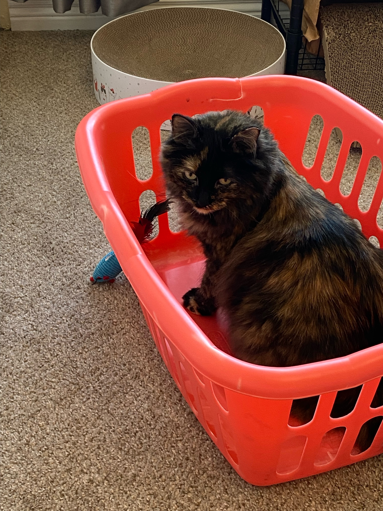
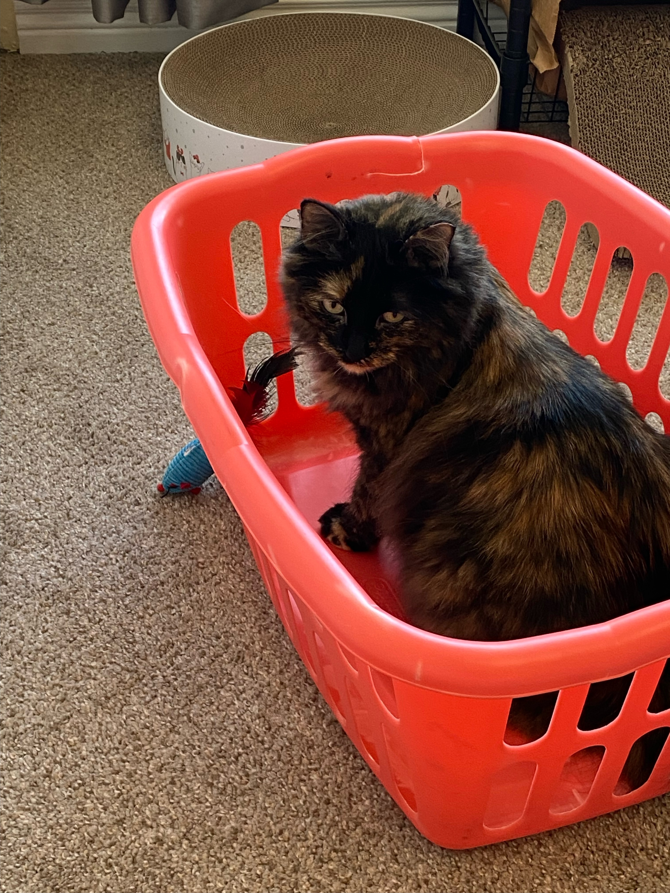
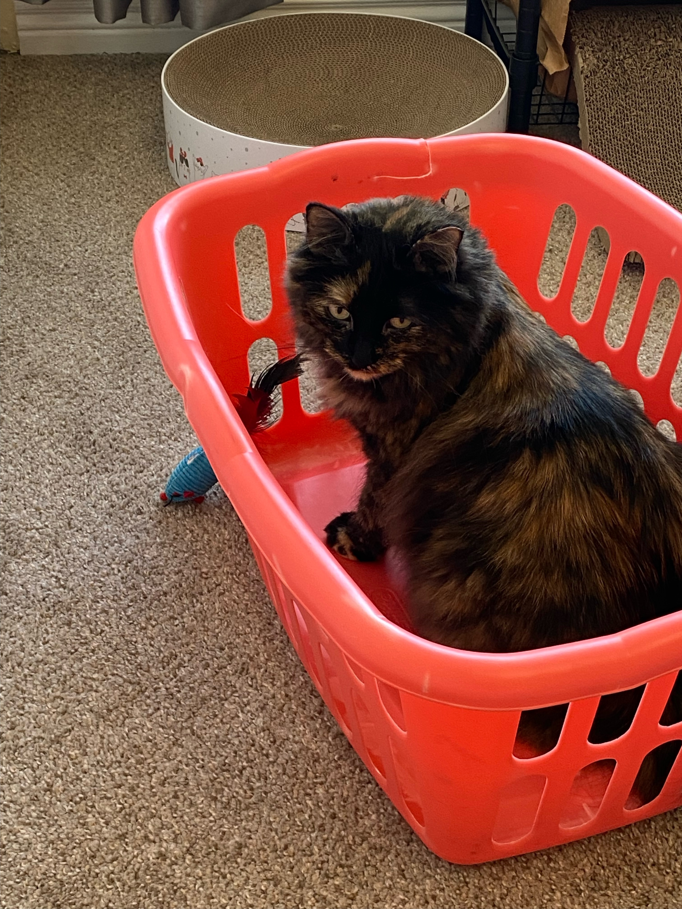
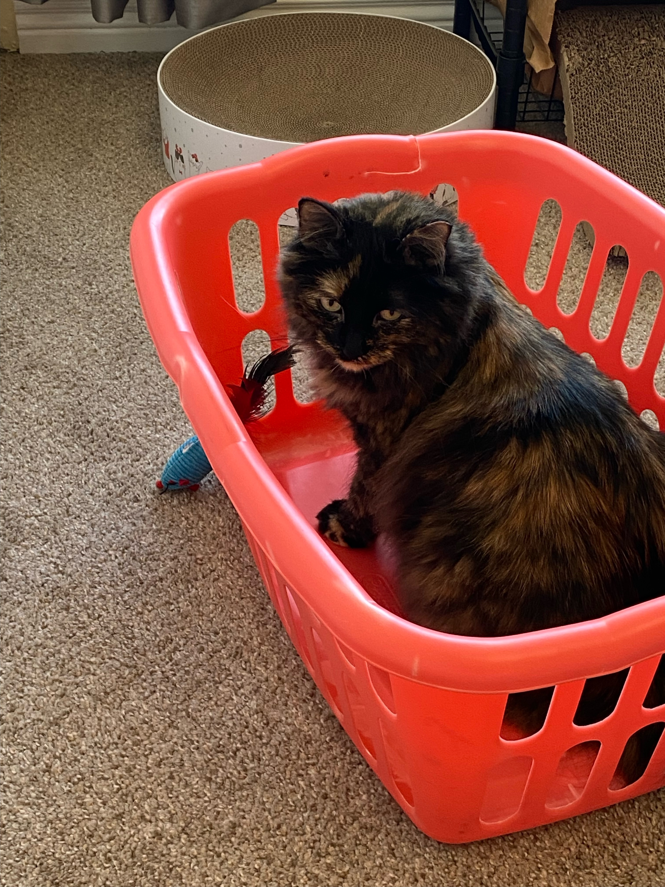

Jooj is a Norwegian Forest Cat(we think). Here are some quick facts about Norwegian Forest Cats:
To learn more about Norwegian Forest Cats, click here.
To take an awesome cat survey, Click here!

 


